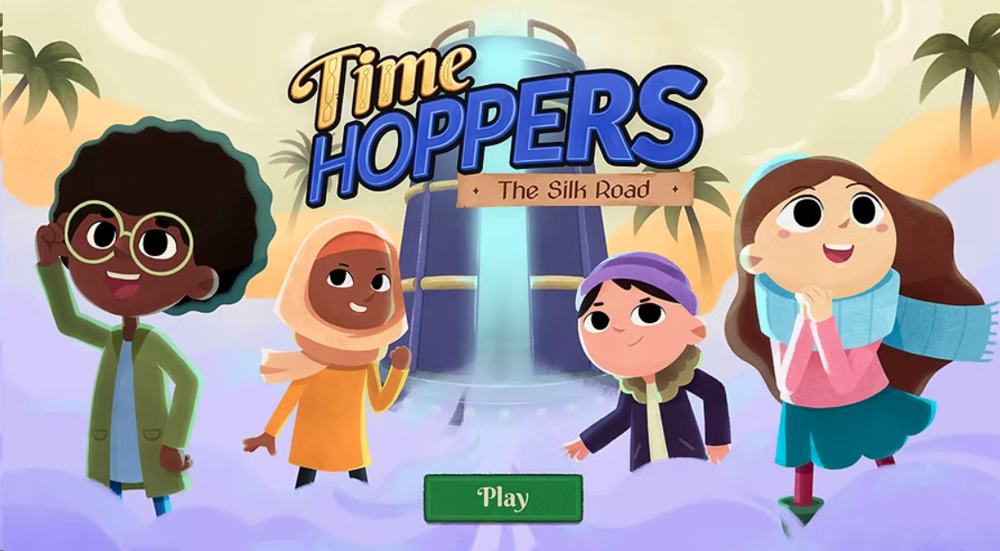

Time Hoppers: The Silk Road
PushStart Studio, for Milo Productions IncTechnologies: Construct 3, JavaScript
Platform: Web
Funded by Canada Media Fund

Time Hoppers: The Silk Road is an adventure RPG for children. The story follows four friends who discover time travel and embark on a mission to protect scientists and their inventions throughout history from an ambitious antagonist.
Created for Milo Productions Inc. for a grant proposal, the project was developed as a vertical slice within a three-month timeframe
Contributions & Responsibilities
As part of a five-developer team, I worked on core RPG systems, including dialogue, character creation, player data management and navigation. I also developed a procedural quest generation system using Tracery, used to generate varied quests for each player from a predefined set of narrative and gameplay elements.
Procedural Quests: developed a system to generate data for the quest system, producing all the elements required for a functional quest: dialogue, character animations, player choices, and completion requirements.
Dialogue System: implemented dialogue functionality, including associated animations, HUDs, inventory interactions, and gameplay events.
Character Creation: worked on the character creation system, integrating character assets, player data, and gameplay functionality.